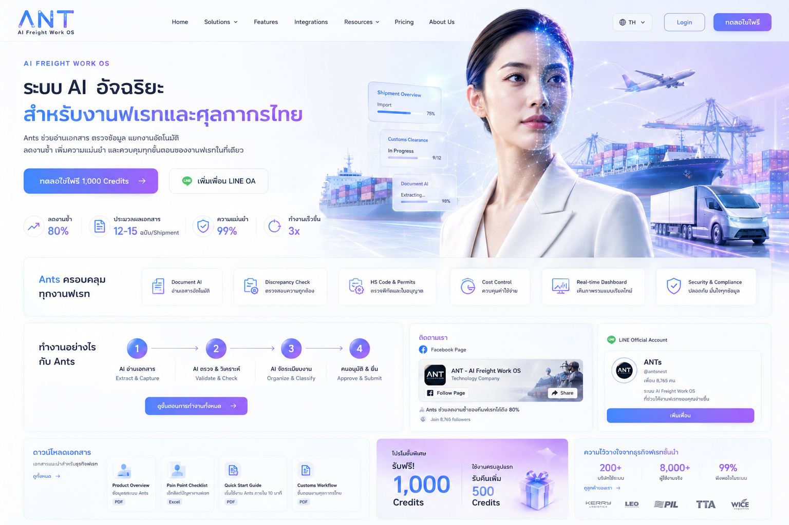

1. SOLUTIONS
AI Control Tower
คุมทุกงานฟเรทในที่เดียว
Ants รวมข้อมูลขนส่ง เอกสาร ค่าใช้จ่าย สถานะงาน และงานข้ามแผนกไว้ในระบบเดียว ให้ผู้บริหารเห็นภาพรวมแบบเรียลไทม์ ตัดสินใจเร็ว ลดความเสี่ยง และเพิ่มประสิทธิภาพทั้งองค์กร
A
รวมงานทั้งหมดไว้ในที่เดียวR
มองเห็นแบบเรียลไทม์D
ตัดสินใจได้เร็วและแม่นยำP
ลดความเสี่ยง เพิ่มกำไรFor Managementเห็น shipment, cost, aging, pending approval และปัญหาค้างงานจากทุกทีมในหน้าเดียว
For Operationงานเอกสาร งานขนส่ง งานพิธีการ และงานส่งต่อทีมไม่หลุด เพราะระบบช่วยจัดคิวและเตือนจุดสำคัญ
For Sales & CSตอบลูกค้าไวขึ้น เพราะข้อมูลราคา เอกสาร และสถานะงานอยู่ใน flow เดียว ไม่ต้องไล่ถามหลายแผนก
For Accountingตั้งเบิก วางบิล เก็บเงิน Debit/Credit Note และหลักฐานประกอบงานเชื่อมกับ job เดียวกัน
ไม่ใช่แค่เห็นข้อมูล แต่คือคุมงานทั้งบริษัทได้จริง
เริ่มจาก 1 workflow จริง แล้วให้ Ants ช่วยลดงานซ้ำที่ไม่ควรใช้คนทำได้ถึง 80%